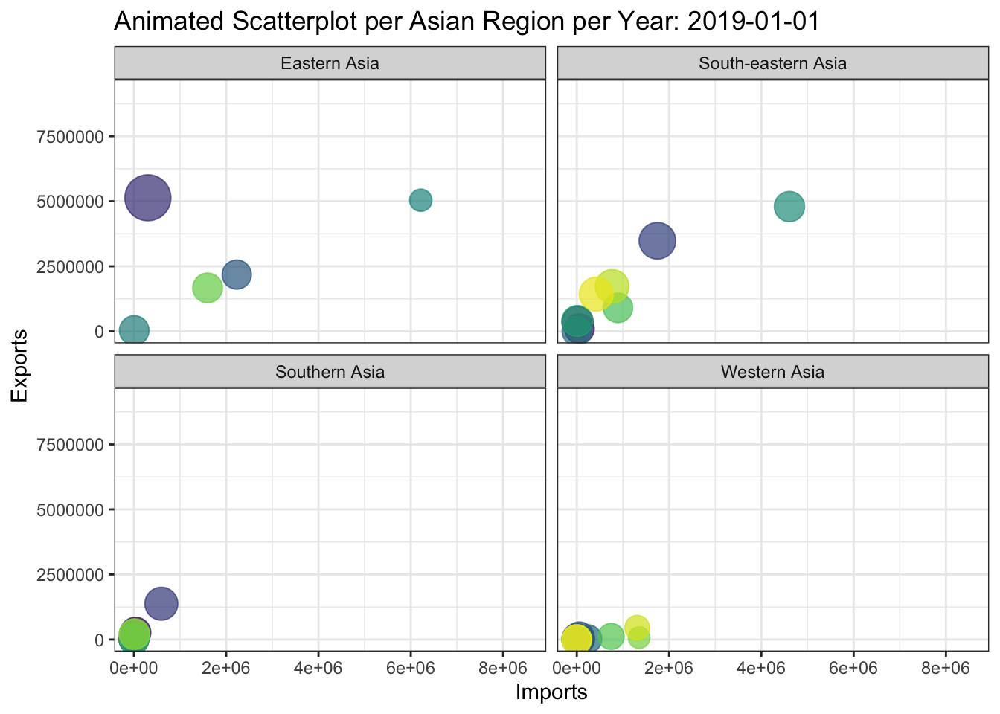

pacman::p_load(scales, viridis, lubridate, ggthemes, gridExtra, tidyverse, readxl, knitr, data.table, readxl, lubridate, stringr, dplyr, gganimate, transformr, patchwork, countrycode)Data Visualization Makeover 04
Putting Visual Analytics into Practical Use
Objective
The objective is to uncover the impact of COVID-19 as well as the global economic and political dynamic in 2022 on Singapore bi-lateral trade (i.e. Import, Export and Trade Balance) by using appropriate analytical visualisation techniques to enhance user and data discovery experiences.
The visualization is created using the Merchandise Trade provided by Department of Statistics, Singapore (DOS).
Getting Started - Data Loading and Processing
Installing and loading the required libraries
Importing Data
This code chunk is to import the data from Merchandise Trade Excel File. The following sheets are within the file:
T1 = Import Data
T2 = Export Data
The data shows the import export relationship between Singapore and the other nations in terms of Million Dollar or Thousand Dollar
Data Structure
The Merchandise Trade data set is labeled with Thousand Dollars and Million Dollars. Further examination shows the following:
Million Dollars - Continent:
Listed under this category are continental data and values, as such are the summation of nations within these continents.
The summation of this continents (except for European Union as it is part of Europe) is = Total Merchandise Exports
Thousand Dollars - Nations:
- Nation specific data and values
import_continent <- read_excel("data/Merchandise_Trade.xlsx",
sheet = "T1",
range = cell_rows(10:16))%>%
select(`Data Series`, contains(c("2019","2020", "2021", "2022"))) %>%
slice(-1) %>%
set_names(if_else(names(.) == "Data Series", "Country", names(.)))
import_continent$Country <- str_replace_all(import_continent$Country, "\\s*\\(.*?\\)", "")
import_continent# A tibble: 5 × 49
Country `2019 Dec` `2019 Nov` 2019 O…¹ 2019 …² 2019 …³ 2019 …⁴ 2019 …⁵ 2019 …⁶
<chr> <dbl> <dbl> <dbl> <dbl> <dbl> <dbl> <dbl> <dbl>
1 America 5686. 6275. 5754. 5633. 6129. 5986. 5876. 5797.
2 Asia 27689. 27905 28378. 26350. 26672. 28473. 26052. 27541
3 Europe 6315. 6827. 6625. 6310. 6534. 6325. 6055. 7987.
4 Oceania 1369. 841. 942. 867. 1015. 815. 504. 889.
5 Africa 521. 642 583. 290. 649. 430 493. 422.
# … with 40 more variables: `2019 Apr` <dbl>, `2019 Mar` <dbl>,
# `2019 Feb` <dbl>, `2019 Jan` <dbl>, `2020 Dec` <dbl>, `2020 Nov` <dbl>,
# `2020 Oct` <dbl>, `2020 Sep` <dbl>, `2020 Aug` <dbl>, `2020 Jul` <dbl>,
# `2020 Jun` <dbl>, `2020 May` <dbl>, `2020 Apr` <dbl>, `2020 Mar` <dbl>,
# `2020 Feb` <dbl>, `2020 Jan` <dbl>, `2021 Dec` <dbl>, `2021 Nov` <dbl>,
# `2021 Oct` <dbl>, `2021 Sep` <dbl>, `2021 Aug` <dbl>, `2021 Jul` <dbl>,
# `2021 Jun` <dbl>, `2021 May` <dbl>, `2021 Apr` <dbl>, `2021 Mar` <dbl>, …export_continent <- read_excel("data/Merchandise_Trade.xlsx",
sheet = "T2",
range = cell_rows(10:16))%>%
select(`Data Series`, contains(c("2019","2020", "2021", "2022"))) %>%
slice(-1) %>%
set_names(if_else(names(.) == "Data Series", "Country", names(.)))
export_continent$Country <- str_replace_all(export_continent$Country, "\\s*\\(.*?\\)", "")
export_continent# A tibble: 5 × 49
Country `2019 Dec` `2019 Nov` 2019 O…¹ 2019 …² 2019 …³ 2019 …⁴ 2019 …⁵ 2019 …⁶
<chr> <dbl> <dbl> <dbl> <dbl> <dbl> <dbl> <dbl> <dbl>
1 America 4614. 4822. 4938. 4754. 4838. 5209. 4990. 5809.
2 Asia 34177 34253. 33530. 32056. 33370. 32193. 29552. 32512.
3 Europe 3851 4173. 5163. 4007. 4278. 5232. 3891. 5480.
4 Oceania 1918. 2078. 2591. 2113. 2046 2022. 2118. 2070.
5 Africa 504. 432. 607. 563. 626. 735. 874. 761.
# … with 40 more variables: `2019 Apr` <dbl>, `2019 Mar` <dbl>,
# `2019 Feb` <dbl>, `2019 Jan` <dbl>, `2020 Dec` <dbl>, `2020 Nov` <dbl>,
# `2020 Oct` <dbl>, `2020 Sep` <dbl>, `2020 Aug` <dbl>, `2020 Jul` <dbl>,
# `2020 Jun` <dbl>, `2020 May` <dbl>, `2020 Apr` <dbl>, `2020 Mar` <dbl>,
# `2020 Feb` <dbl>, `2020 Jan` <dbl>, `2021 Dec` <dbl>, `2021 Nov` <dbl>,
# `2021 Oct` <dbl>, `2021 Sep` <dbl>, `2021 Aug` <dbl>, `2021 Jul` <dbl>,
# `2021 Jun` <dbl>, `2021 May` <dbl>, `2021 Apr` <dbl>, `2021 Mar` <dbl>, …import_nation <- read_excel("data/Merchandise_Trade.xlsx",
sheet = "T1",
range = cell_rows(10:129))%>%
select(`Data Series`, contains(c("2019","2020", "2021", "2022"))) %>%
slice(-c(1:7))%>%
set_names(if_else(names(.) == "Data Series", "Country", names(.)))
import_nation$Country <- str_replace_all(import_nation$Country, "\\s*\\(.*?\\)", "")
import_nation# A tibble: 112 × 49
Country 2019 …¹ 2019 …² 2019 …³ 2019 …⁴ 2019 …⁵ 2019 …⁶ 2019 …⁷ 2019 …⁸
<chr> <dbl> <dbl> <dbl> <dbl> <dbl> <dbl> <dbl> <dbl>
1 Belgium 148564 112197 148895 109280 110542 140243 154637 220417
2 Denmark 44062 53664 112559 59067 57022 53531 41769 89820
3 France 1305861 1607039 1539927 1553172 1384504 1377160 1247644 1692436
4 Germany, Fed… 1090801 1076037 1090588 1084790 1141855 1194530 1016793 1201604
5 Greece 12161 14507 9397 12033 11920 12095 27007 12964
6 Ireland 93080 111909 91189 72531 76235 93976 75391 79185
7 Italy 547815 544113 499738 350214 451463 486021 420572 479798
8 Luxembourg 2205 70742 4511 3546 3438 7249 9804 5269
9 Netherlands 243929 382026 248639 262842 496961 298550 270901 510772
10 United Kingd… 1122876 1057533 1028921 961614 1044665 881698 852706 977237
# … with 102 more rows, 40 more variables: `2019 Apr` <dbl>, `2019 Mar` <dbl>,
# `2019 Feb` <dbl>, `2019 Jan` <dbl>, `2020 Dec` <dbl>, `2020 Nov` <dbl>,
# `2020 Oct` <dbl>, `2020 Sep` <dbl>, `2020 Aug` <dbl>, `2020 Jul` <dbl>,
# `2020 Jun` <dbl>, `2020 May` <dbl>, `2020 Apr` <dbl>, `2020 Mar` <dbl>,
# `2020 Feb` <dbl>, `2020 Jan` <dbl>, `2021 Dec` <dbl>, `2021 Nov` <dbl>,
# `2021 Oct` <dbl>, `2021 Sep` <dbl>, `2021 Aug` <dbl>, `2021 Jul` <dbl>,
# `2021 Jun` <dbl>, `2021 May` <dbl>, `2021 Apr` <dbl>, `2021 Mar` <dbl>, …export_nation <- read_excel("data/Merchandise_Trade.xlsx",
sheet = "T2",
range = cell_rows(10:101))%>%
select(`Data Series`, contains(c("2019","2020", "2021", "2022"))) %>%
slice(-c(1:7)) %>%
set_names(if_else(names(.) == "Data Series", "Country", names(.)))
export_nation$Country <- str_replace_all(export_nation$Country, "\\s*\\(.*?\\)", "")
export_nation# A tibble: 84 × 49
Country 2019 …¹ 2019 …² 2019 …³ 2019 …⁴ 2019 …⁵ 2019 …⁶ 2019 …⁷ 2019 …⁸
<chr> <dbl> <dbl> <dbl> <dbl> <dbl> <dbl> <dbl> <dbl>
1 Belgium 498029 553449 635001 463503 338818 389853 318325 1380735
2 Denmark 13039 11415 15446 12465 19571 21957 19587 27991
3 France 415758 435599 429136 438494 429193 410138 360330 577736
4 Germany, Fed… 601244 581154 718934 615005 637776 665181 596595 681759
5 Greece 52483 89984 103260 70956 97643 99937 108931 99698
6 Ireland 51855 37105 29955 18348 22930 48834 56440 46114
7 Italy 60013 63034 75656 99466 75998 79456 76213 111059
8 Luxembourg 12166 11691 10664 8097 15148 19069 13156 13103
9 Netherlands 924561 1085006 1014106 761725 866614 1108801 934829 1110456
10 United Kingd… 371352 426137 805061 398734 683087 695876 351668 517108
# … with 74 more rows, 40 more variables: `2019 Apr` <dbl>, `2019 Mar` <dbl>,
# `2019 Feb` <dbl>, `2019 Jan` <dbl>, `2020 Dec` <dbl>, `2020 Nov` <dbl>,
# `2020 Oct` <dbl>, `2020 Sep` <dbl>, `2020 Aug` <dbl>, `2020 Jul` <dbl>,
# `2020 Jun` <dbl>, `2020 May` <dbl>, `2020 Apr` <dbl>, `2020 Mar` <dbl>,
# `2020 Feb` <dbl>, `2020 Jan` <dbl>, `2021 Dec` <dbl>, `2021 Nov` <dbl>,
# `2021 Oct` <dbl>, `2021 Sep` <dbl>, `2021 Aug` <dbl>, `2021 Jul` <dbl>,
# `2021 Jun` <dbl>, `2021 May` <dbl>, `2021 Apr` <dbl>, `2021 Mar` <dbl>, …Exploring and Cleaning the Data
Pivoting Dataset
This section ensures that the datetime column labels are represented correctly. The dataset must be pivoted to reflect that.
imports_C_pivot <- import_continent %>%
pivot_longer(
cols = !"Country",
names_to = "Month-Year",
values_to = "Amount",
values_drop_na = TRUE
)
imports_C_pivot# A tibble: 240 × 3
Country `Month-Year` Amount
<chr> <chr> <dbl>
1 America 2019 Dec 5686.
2 America 2019 Nov 6275.
3 America 2019 Oct 5754.
4 America 2019 Sep 5633.
5 America 2019 Aug 6129.
6 America 2019 Jul 5986.
7 America 2019 Jun 5876.
8 America 2019 May 5797.
9 America 2019 Apr 6128
10 America 2019 Mar 5529.
# … with 230 more rowsimports_N_pivot <- import_nation %>%
pivot_longer(
cols = !"Country",
names_to = "Month-Year",
values_to = "Amount",
values_drop_na = TRUE
)
imports_N_pivot# A tibble: 5,376 × 3
Country `Month-Year` Amount
<chr> <chr> <dbl>
1 Belgium 2019 Dec 148564
2 Belgium 2019 Nov 112197
3 Belgium 2019 Oct 148895
4 Belgium 2019 Sep 109280
5 Belgium 2019 Aug 110542
6 Belgium 2019 Jul 140243
7 Belgium 2019 Jun 154637
8 Belgium 2019 May 220417
9 Belgium 2019 Apr 134313
10 Belgium 2019 Mar 222413
# … with 5,366 more rowsexports_C_pivot <- export_continent %>%
pivot_longer(
cols = !"Country",
names_to = "Month-Year",
values_to = "Amount",
values_drop_na = TRUE
)
exports_C_pivot# A tibble: 240 × 3
Country `Month-Year` Amount
<chr> <chr> <dbl>
1 America 2019 Dec 4614.
2 America 2019 Nov 4822.
3 America 2019 Oct 4938.
4 America 2019 Sep 4754.
5 America 2019 Aug 4838.
6 America 2019 Jul 5209.
7 America 2019 Jun 4990.
8 America 2019 May 5809.
9 America 2019 Apr 5024.
10 America 2019 Mar 5281.
# … with 230 more rowsexports_N_pivot <- export_nation %>%
pivot_longer(
cols = !"Country",
names_to = "Month-Year",
values_to = "Amount",
values_drop_na = TRUE
)
exports_N_pivot# A tibble: 4,032 × 3
Country `Month-Year` Amount
<chr> <chr> <dbl>
1 Belgium 2019 Dec 498029
2 Belgium 2019 Nov 553449
3 Belgium 2019 Oct 635001
4 Belgium 2019 Sep 463503
5 Belgium 2019 Aug 338818
6 Belgium 2019 Jul 389853
7 Belgium 2019 Jun 318325
8 Belgium 2019 May 1380735
9 Belgium 2019 Apr 277437
10 Belgium 2019 Mar 274500
# … with 4,022 more rowsOrganizing Month-Year
This Section converts the “Month-Year” column to datetime.
imports_C_pivot$`Month-Year` <- as.Date(paste(imports_C_pivot$`Month-Year`, "01"), format = "%Y %b %d")
imports_C_pivot# A tibble: 240 × 3
Country `Month-Year` Amount
<chr> <date> <dbl>
1 America 2019-12-01 5686.
2 America 2019-11-01 6275.
3 America 2019-10-01 5754.
4 America 2019-09-01 5633.
5 America 2019-08-01 6129.
6 America 2019-07-01 5986.
7 America 2019-06-01 5876.
8 America 2019-05-01 5797.
9 America 2019-04-01 6128
10 America 2019-03-01 5529.
# … with 230 more rowsimports_N_pivot$`Month-Year` <- as.Date(paste(imports_N_pivot$`Month-Year`, "01"), format = "%Y %b %d")
imports_N_pivot# A tibble: 5,376 × 3
Country `Month-Year` Amount
<chr> <date> <dbl>
1 Belgium 2019-12-01 148564
2 Belgium 2019-11-01 112197
3 Belgium 2019-10-01 148895
4 Belgium 2019-09-01 109280
5 Belgium 2019-08-01 110542
6 Belgium 2019-07-01 140243
7 Belgium 2019-06-01 154637
8 Belgium 2019-05-01 220417
9 Belgium 2019-04-01 134313
10 Belgium 2019-03-01 222413
# … with 5,366 more rowsexports_C_pivot$`Month-Year` <- as.Date(paste(exports_C_pivot$`Month-Year`, "01"), format = "%Y %b %d")
exports_C_pivot# A tibble: 240 × 3
Country `Month-Year` Amount
<chr> <date> <dbl>
1 America 2019-12-01 4614.
2 America 2019-11-01 4822.
3 America 2019-10-01 4938.
4 America 2019-09-01 4754.
5 America 2019-08-01 4838.
6 America 2019-07-01 5209.
7 America 2019-06-01 4990.
8 America 2019-05-01 5809.
9 America 2019-04-01 5024.
10 America 2019-03-01 5281.
# … with 230 more rowsexports_N_pivot$`Month-Year` <- as.Date(paste(exports_N_pivot$`Month-Year`, "01"), format = "%Y %b %d")
exports_N_pivot# A tibble: 4,032 × 3
Country `Month-Year` Amount
<chr> <date> <dbl>
1 Belgium 2019-12-01 498029
2 Belgium 2019-11-01 553449
3 Belgium 2019-10-01 635001
4 Belgium 2019-09-01 463503
5 Belgium 2019-08-01 338818
6 Belgium 2019-07-01 389853
7 Belgium 2019-06-01 318325
8 Belgium 2019-05-01 1380735
9 Belgium 2019-04-01 277437
10 Belgium 2019-03-01 274500
# … with 4,022 more rowsMerge Dataset for both Continental and National Values
This section creates the consolidated dataset for both continental and national datasets with the following improvements:
Net Trade = Exports - Imports
Omit of all NA values
continent <- merge(x=imports_C_pivot , y=exports_C_pivot, by= c("Country", "Month-Year"), all.x = TRUE, all.y = TRUE)
Net_Trade = continent$Amount.y - continent$Amount.x
continent$Net_Trade <- Net_Trade
na.omit(continent) %>%
rename(
Continent = Country,
Date = `Month-Year`,
Imports = Amount.x,
Exports = Amount.y
)nation <- merge(x=imports_N_pivot , y=exports_N_pivot, by= c("Country", "Month-Year"), all.x = TRUE, all.y = TRUE)
Net_Trade = nation$Amount.y - nation$Amount.x
nation$Net_Trade <- Net_Trade
na.omit(nation) %>%
rename(
Date = `Month-Year`,
Imports = Amount.x,
Exports = Amount.y
)Continental Trade Analysis - Visual Exploration
This section explores macro trade relationship of Singapore on the continental level.
Line Graph Visualization for Imports and Exports
Code
continent_import <- ggplot(continent,
aes(x = `Month-Year`, y = Amount.x, color = Country)) +
geom_line()+
labs (x = "Date",
y = "Import in Million Dollars",
fill = "Continent",
title = "Import in Million Dollars by Continent") +
scale_x_date(date_labels = "%b-%y")+
theme_bw()
continent_export <- ggplot(continent,
aes(x = `Month-Year`, y = Amount.y, color = Country)) +
geom_line()+
labs (x = "Date",
y = "Export in Million Dollars",
fill = "Continent",
title = "Export in Million Dollars by Continent") +
scale_x_date(date_labels = "%b-%y")+
theme_bw() continent_import continent_exportA simple beginning in visual analysis is a line chart to see the time series impact on both imports and exports. Here is the following insights:
Asia remains as the highest import export partner for Singapore. Consistently, from 2019 to 2022, Asia remains as the top import export partner of Singapore due to proximity. America and Europe follows as close 2nd and 3rd.
COVID 19 had none to minimal impact to Singapore’s Macro Trade Relationship. Year 2019 and 2020 - 2021 show no distinct drop in import and export amount (drop = significant change in numbers as minimal up and downs are expected).
Animated Time Series Scatter Plot
Code
ggplot(continent, aes(x = Amount.x, y = Amount.y, size = Net_Trade, color = Country)) +
geom_point(show.legend = FALSE, alpha = 0.7) +
scale_color_viridis_d() +
scale_size(range = c(2, 12)) +
transition_time(continent$`Month-Year`) +
labs(title = "Animated Scatterplot per Continent per Year: {frame_time}", x = "Imports", y = "Exports", fill = "Continent") +
theme(legend.position = "bottom") +
theme_bw() +
facet_wrap(~Country)
The Animated Scatter plot refocuses that Asia is the highest import export trade partner for Singapore, though there is an additional insight
Asia remains as the highest import export partner and moving to 2022, both import and export increases as it reaches 2022 as the other continent remained constant.
Europe shows periods of fluctuations in the index (export/import) as compared to the more stable continents.
Next Step
- Visualize and Analyze nations within Asia and Europe separately to check and describe the time series progress of the import export trade amount.
Asian Trade Analysis - Visual Exploration
This section explores the macro economic trade relation of Singapore to its Asian Trade partners.
Identifying Country - Continent Labels
This section adds a continent label to the nation database identifying which continent a country belongs to.
countrycode() Package
You can use the countrycode() package to identify the continent and region of the country
continent = Continent as defined in the World Bank Development Indicators
un.regionsub.name: United Nations sub-region name
nation$Continent <- countrycode(sourcevar = nation$Country,
origin = "country.name",
destination = "continent")Warning in countrycode_convert(sourcevar = sourcevar, origin = origin, destination = dest, : Some values were not matched unambiguously: Cocos Islands, Commonwealth Of Independent States, French Southern Territories, Micronesia, Other Countries In America, Other Countries In Oceania, Yemen Democraticnation$Continent[nation$Country == "Other Country"] <- "Unknown"
nation$Region <- countrycode(sourcevar = nation$Country,
origin = "country.name",
destination = "un.regionsub.name")Warning in countrycode_convert(sourcevar = sourcevar, origin = origin, destination = dest, : Some values were not matched unambiguously: Commonwealth Of Independent States, Micronesia, Netherlands Antilles, Other Countries In America, Other Countries In Oceania, Taiwan, Yemen Democraticnation$Region[nation$Country == "Other Country"] <- "Unknown"
nation <- na.omit(nation)
nationnation_asia <- nation %>%
filter(str_detect(Continent, "Asia")) %>%
select(-(Continent))
nation_asianation_eu <- nation %>%
filter(str_detect(Continent, "Europe")) %>%
select(-(Continent))
nation_euAsia Sub Region Visualization
Code
ggplot(nation_asia, aes(x = Amount.x, y = Amount.y, size = Net_Trade, color = Country)) +
geom_point(show.legend = FALSE, alpha = 0.7) +
scale_color_viridis_d() +
scale_size(range = c(2, 12)) +
transition_time(nation_asia$`Month-Year`) +
labs(title = "Animated Scatterplot per Asian Region per Year: {frame_time}", x = "Imports", y = "Exports", fill = "Region") +
theme(legend.position = "bottom") +
theme_bw() +
facet_wrap(~Region)
Based on the Animated Scatter Plot, the following insights are:
East Asia shows high import and export contribution. It is noted that there is a nation that have seen fluctuations in positioning in 2021 - 2022
Southeast Asia shows a more stable amount, thoigh there is a nation with more fluctuating position
East Asian Import Export Visualization
This section shows the trade relation in East Asia.
Code
nation_asia_ea <- nation_asia %>%
filter(str_detect(Region, "Eastern Asia")) %>%
select(-(Region))
asia_ea_import <- ggplot(nation_asia_ea,
aes(x = `Month-Year`, y = Amount.x, color = Country)) +
geom_line()+
labs (x = "Date",
y = "Import in Thousand Dollars",
fill = "Country",
title = "Import in Thousand Dollars by east Asian Country") +
scale_x_date(date_labels = "%b-%y")+
theme_bw()
asia_ea_export <- ggplot(nation_asia_ea,
aes(x = `Month-Year`, y = Amount.y, color = Country)) +
geom_line()+
labs (x = "Date",
y = "Export in Thousand Dollars",
fill = "Country",
title = "Export in Thousand Dollars by East Asian Country") +
scale_x_date(date_labels = "%b-%y")+
theme_bw() Code
asia_ea_import Code
asia_ea_exportCode
ggplot(nation_asia_ea,
aes(x = `Month-Year`, y = Amount.x, color = Country)) +
geom_line() +
scale_color_viridis_d() +
labs(x = "Date",
y = "Net Trade",
fill = "Country",
title = "Net Trade by East Asian Country") +
theme(legend.position = "top") +
theme_bw() +
geom_point() +
transition_reveal(nation_asia_ea$`Month-Year`)`geom_line()`: Each group consists of only one observation.
ℹ Do you need to adjust the group aesthetic?
`geom_line()`: Each group consists of only one observation.
ℹ Do you need to adjust the group aesthetic?Insights on the East Asian Region
Singapore has the highest Import and Export Trade relationship with Mainland China. This is due to being supported by the updated bilateral agreement made in 2019. Given Singapore is one of the biggest trade hubs and China as a manufacturing hub, Merchandise Trade between these nations are part of the supply chain such as electronic equipment, machinery and minerals.
Singapore - China Net Trade is higher in favor of Singapore (higher export). This is due to Singapore exporting more variety of goods from consumer to manufacturing requirements to China.
Singapore - China Trade Relationship
SINGAPORE-CHINA
In 2020, Singapore exported $42.9B to China. The main products that Singapore exported to China are Integrated Circuits ($10.6B), Ethylene Polymers ($2.25B), and Machinery Having Individual Functions ($1.86B).
CHINA-SINGAPORE
In 2020, China exported $54B to Singapore. The main products that China exported to Singapore were Integrated Circuits ($5.55B), Refined Petroleum ($4.88B), and Broadcasting Equipment ($3.97B). South East Asian Import Export Visualization
Singapore also have a high export low import relationship with Hong Kong. This is due to Hong Kong primarily acting as Financial Services Sector with minimal merchandise export on its own and rely on imports for consumer goods.
South East Asian Import Export Visualization
This section shows the trade relation in South East Asia.
Code
nation_asia_sea <- nation_asia %>%
filter(str_detect(Region, "South-eastern Asia")) %>%
select(-(Region))
asia_sea_import <- ggplot(nation_asia_sea,
aes(x = `Month-Year`, y = Amount.x, color = Country)) +
geom_line()+
labs (x = "Date",
y = "Import in Thousand Dollars",
fill = "Country",
title = "Import in Thousand Dollars by Southeast Asian Country") +
scale_x_date(date_labels = "%b-%y")+
theme_bw()
asia_sea_export <- ggplot(nation_asia_sea,
aes(x = `Month-Year`, y = Amount.y, color = Country)) +
geom_line()+
labs (x = "Date",
y = "Export in Thousand Dollars",
fill = "Country",
title = "Export in Thousand Dollars by Southeast Asian Country") +
scale_x_date(date_labels = "%b-%y")+
theme_bw() asia_sea_importasia_sea_exportCode
ggplot(nation_asia_sea,
aes(x = `Month-Year`, y = Amount.x, color = Country)) +
geom_line() +
scale_color_viridis_d() +
labs(x = "Date",
y = "Net Trade",
fill = "Country",
title = "Net Trade by Southeast Asian Country") +
theme(legend.position = "top") +
theme_bw() +
geom_point() +
transition_reveal(nation_asia_sea$`Month-Year`)`geom_line()`: Each group consists of only one observation.
ℹ Do you need to adjust the group aesthetic?
`geom_line()`: Each group consists of only one observation.
ℹ Do you need to adjust the group aesthetic?
Insights on the South East Asian Region
Malaysia is the top import and export trade partner with Singapore. This is due to proximity between the nations. Furthermore. Net Trade has higher export with Singapore
Singapore - Malaysia Trade Relationship
MALAYSIA-SINGAPORE
In 2020, Malaysia exported $36.5B to Singapore. The main products that Malaysia exported to Singapore are Integrated Circuits ($11.1B), Refined Petroleum ($5.63B), and Office Machine Parts ($1.24B).
SINGAPORE-MALAYSIA
In 2020, Singapore exported $22.9B to Malaysia. The main products that Singapore exported to Malaysia were Integrated Circuits ($5.7B), Refined Petroleum ($4.33B), and Gold ($894M).
Singapore has a high export to Indonesia due to the high amounts of Gold and manufacturing parts sent over. Similar to nations that Singapore does bilateral trades of similar good, higher exports are primarily due to higher variety of goods.
European Trade Analysis - Visual Exploration
This section explores the macro economic trade relation of Singapore to its European Trade partners.
Europe Sub Region Visualization
Code
ggplot(nation_eu, aes(x = Amount.x, y = Amount.y, size = Net_Trade, color = Country)) +
geom_point(show.legend = FALSE, alpha = 0.7) +
scale_color_viridis_d() +
scale_size(range = c(2, 12)) +
transition_time(nation_eu$`Month-Year`) +
labs(title = "Animated Scatterplot per European Region per Year: {frame_time}", x = "Imports", y = "Exports", fill = "Region") +
theme(legend.position = "bottom") +
theme_bw() +
facet_wrap(~Region)Based on the animated scatter plot, Western European nations have more dynamic trade relations as compared to others
Western European Import Export Visualization
This section shows the trade relation in West Europe.
Code
nation_eu_west <- nation_eu %>%
filter(str_detect(Region, "Western Europe")) %>%
select(-(Region))
eu_west_import <- ggplot(nation_eu_west,
aes(x = `Month-Year`, y = Amount.x, color = Country)) +
geom_line()+
labs (x = "Date",
y = "Import in Thousand Dollars",
fill = "Country",
title = "Import in Thousand Dollars by West Euro Country") +
scale_x_date(date_labels = "%b-%y")+
theme_bw()
eu_west_export <- ggplot(nation_eu_west,
aes(x = `Month-Year`, y = Amount.y, color = Country)) +
geom_line()+
labs (x = "Date",
y = "Export in Thousand Dollars",
fill = "Country",
title = "Export in Thousand Dollars by West Euro Country") +
scale_x_date(date_labels = "%b-%y")+
theme_bw() eu_west_import
eu_west_importCode
ggplot(nation_eu_west,
aes(x = `Month-Year`, y = Amount.x, color = Country)) +
geom_line() +
scale_color_viridis_d() +
labs(x = "Date",
y = "Net Trade",
fill = "Country",
title = "Net Trade by West Euro Country") +
theme(legend.position = "top") +
theme_bw() +
geom_point() +
transition_reveal(nation_eu_west$`Month-Year`)`geom_line()`: Each group consists of only one observation.
ℹ Do you need to adjust the group aesthetic?
`geom_line()`: Each group consists of only one observation.
ℹ Do you need to adjust the group aesthetic?Insights on the Western European Region
As compared to Asian Trade partners, Western Europe experience high levels of fluctuation, presenting no clear front runner in trade relations with Singapore. This may be due to West Europe being majority part of the European Union and its ‘Single Market’. The ‘Single Market’ allows companies in Europe to operate in all nation states and be able to cooperatively export their products as a block while import products outside in bulk as well.